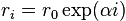
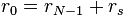
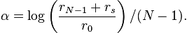
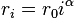
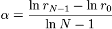
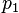
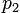
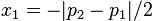
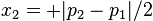

9. horton.grid – Numerical integraton grids¶
9.1. horton.grid.atgrid – Atomic grids¶
- class horton.grid.atgrid.AtomicGrid(number, pseudo_number, center, agspec='medium', random_rotate=True, points=None)¶
Arguments:
- number
- The element number for which this grid will be used.
- pseudo_number
- The effective core charge for which this grid will be used.
- center
- The center of the radial grid
Optional arguments:
- agspec
- A specifications of the atomic grid. This can either be an instance of the AtomicGridSpec object, or the first argument of its constructor.
- random_rotate
- When set to False, the random rotation of the grid points is disabled. Such random rotation improves the accuracy of the integration, but leads to small random changes in the results that are not reproducible.
- points
- Array to store the grid points
- av_weights¶
The weights needed to compute spherical averages.
- center¶
The center of the grid.
- get_spherical_average(*args, **kwargs)¶
Returns the spherical average on the radial grid of the product of the given functions
- nlls¶
The number of Lebedev-Laikov grid points at each sphere.
- nsphere¶
The number of spheres in the grid.
- number¶
The element number of the grid.
- random_rotate¶
The random rotation flag.
- rgrid¶
The radial integration grid
- update_center(center)¶
- horton.grid.atgrid.get_rotation_matrix(axis, angle)¶
Rodrigues’ rotation formula
- horton.grid.atgrid.get_random_rotation()¶
Return a random rotation matrix
- class horton.grid.atgrid.AtomicGridSpec(definition='medium')¶
A specification of atomic integration grids for multiple elements.
Optional argument:
- definition
A definition of the grid.
This can be a string that can be interpreted in several ways to define the grids. Attempts to interpret the string are done in the following order:
- A local file that has the same format as the files in ${HORTONDATA}/grids.
- It can be any of ‘coarse’, ‘medium’, ‘fine’, ‘veryfine’, ‘ultrafine’, ‘insane’. These have a straightforward one-to-one mapping with the files in ${HORTONDATA}/grids.
- It can be the name of a file in ${HORTONDATA}/grids (without the extension .txt
- A string of the format: rname:rmin:rmax:nrad:nll, with the following meaning for the keywords. rname specifies the type of radial grid. It can be linear, exp or power. rmin and rmax specify the first and the last radial grid point in angstroms. nrad is the number of radial grid points. nll is the number of points for the angular Lebedev-Laikov grid.
Instead of a string, a Pythonic grid specification is also supported:
- A tuple (rgrid, nll), where rgrid is an instance of RadialGrid and nll is an integer or a list of integers. The same grid is then used for each element.
- A list where each element is a tuple of the form (number, pseudo_number, rgrid, nll), where number is the element number, pseudo_number is the effective core charge, rgrid is an instance of RadialGrid and nll is an integer or a list of integers. In this case, each element has its own grid specification. When using pseudo potentials, the most appropriate grid can be selected, depending on the effective core charge.
- classmethod from_hdf5(grp, lf)¶
- get(number, pseudo_number)¶
- get_size(number, pseudo_number)¶
Get the size of an atomic grid for a given element
Arguments:
- number
- The element number
- pseudo_number
- The effective core charge
- to_hdf5(grp, selection=None)¶
9.2. horton.grid.base – Base classes for 3D integration grids¶
- class horton.grid.base.IntGrid(points, weights, subgrids=None)¶
Base class for real-space integration grids in Horton
Arguments:
- points
- A numpy array with shape (npoint,3) with the Cartesian coordinates of the grids points.
- weights
- The integration weights of the grid points
Optional arguments:
- subgrids
- Can be given when this grid is composed of several other grids. The points data is shared, but the weights of the subgrids may be different.
- eval_spline(cubic_spline, center, output, cell=None)¶
- integrate(*args, **kwargs)¶
Integrate the product of all arguments
Arguments:
- data1, data2, ...
- All arguments must be arrays with the same size as the number of grid points. The arrays contain the functions, evaluated at the grid points, that must be multiplied and integrated.
Optional arguments:
- center=None
- When given, multipole moments are computed with respect to this center instead of a plain integral.
- lmax=0
- The maximum angular momentum to consider when computing multipole moments
- mtype=1
- The type of multipole moments: 1=``cartesian``, 2=``pure``, 3=``radial``.
- segments=None
- This argument can be used to divide the grid in segments. When given, it must be an array with the number of grid points in each consecutive segment. The integration is then carried out over each segment separately and an array of results is returned. The sum over all elements gives back the total integral.
- points¶
The grid points.
- shape¶
The shape of the grid.
- size¶
The size of the grid.
- subgrids¶
A list of grid objects used to construct this grid.
- weights¶
The grid weights.
- zeros()¶
9.3. horton.grid.cext – C++ extensions¶
- horton.grid.cext.lebedev_laikov_npoint(lvalue)¶
Return the number of Lebedev-Laikov grid points for a given angular momentum.
- horton.grid.cext.lebedev_laikov_sphere(grid)¶
Fill the grid with a Lebedev Laikov grid points of a given size.
Arguments:
- points
- The output array for the grid points, shape (npoint,3).
- weights
- The output array for the grid weights, shape (npoint,).
- horton.grid.cext.becke_helper_atom()¶
beck_helper_atom(points, weights, radii, centers, i, k)
Compute the Becke weights for a given atom an a grid.
Arguments:
- points
- The Cartesian coordinates of the grid points. Numpy array with shape (npoint, 3)
- weights
- The output array where the Becke partitioning weights are written. Numpy array with shape (npoint,)
- radii
- The covalent radii used to shrink/enlarge basins in the Becke scheme.
- centers
- The positions of the nuclei.
- select
- The selected atom for which the weights should be created.
- order
- The order of the switching functions. (That is k in Becke’s paper.)
See Becke’s paper for the details: http://dx.doi.org/10.1063/1.454033
- class horton.grid.cext.Extrapolation¶
- deriv_left()¶
Evaluate the extrapolation function derivative at the left of the cubic spline interval
- deriv_right()¶
Evaluate the extrapolation function derivative at the right of the cubic spline interval
- eval_left()¶
Evaluate the extrapolation function at the left of the cubic spline interval
- eval_right()¶
Evaluate the extrapolation function at the right of the cubic spline interval
- static from_string()¶
Create an extrpolation object from a string description
- to_string()¶
Return an extrapolation object in string respresentation
- class horton.grid.cext.ZeroExtrapolation¶
Zero left and right of the cubic spline interval
- class horton.grid.cext.CuspExtrapolation¶
Exponential extrapolation at the left side, zero at the right size
- class horton.grid.cext.PowerExtrapolation¶
Zero at the right side, power law at the left side
- power¶
The power parameters
- to_string()¶
- horton.grid.cext.tridiagsym_solve()¶
- class horton.grid.cext.CubicSpline¶
A cubic spline object
Arguments:
- y
- The function values at the 1D grid.
Optional arguments:
- dx
- The derivative of the function values at the 1D grid. If not given, they are determined such that the second derivative of the cubic spline is continuous at the grid points.
- rtransform
- The transformation object that specifies the 1D grid. If not given, an identity transform is used
- extrapolation
- The extrapolation object that specifies the spline function outside the interval determined by the 1D grid. By default, CuspExtrapolation() is used.
- __call__¶
evaluate the spline on a grid
Arguments:
- new_x
- A numpy array with the x-values at which the spline must be evaluated.
Optional arguments:
- new_y
- When given, it is used as output argument. This array must have the same size of new_x.
Returns: new_y
- deriv()¶
Evaluate the derivative of the spline (towards x) on a grid
Arguments:
- new_x
- A numpy array with the x-values at which the spline must be evaluated.
Optional arguments:
- new_dx
- When given, it is used as output argument. This array must have the same size of new_x.
Returns: new_dx
- dt¶
Array with derivatives (towards t) at the grid points
- dx¶
Array with derivatives (towards x) at the grid points
- extrapolation¶
The extrapolation object used for this spline
- static from_hdf5()¶
- rtransform¶
The RTransform object used for this spline
- to_hdf5()¶
- y¶
Array with function values at the grid points
- horton.grid.cext.compute_cubic_spline_int_weights()¶
- horton.grid.cext.index_wrap()¶
- horton.grid.cext.eval_spline_cube()¶
Evaluate a spherically symmetric function on a uniform grid
Arguments:
- spline
- The cubic spline that contains the radial dependence of the spherically symmetric function.
- center
- The center of the spherically symmetric function.
- output
- The output array in which the result is stored.
- ugrid
- An instance of UniformGrid that specifies the grid points.
Note that, in case of periodic boundary conditions in the ugrid object, and when the spline as a non-zero tail, this routine may give inaccurate/incorrect results.
- horton.grid.cext.eval_spline_grid()¶
Evaluate a spherically symmetric function on a general grid
Arguments:
- spline
- The cubic spline that contains the radial dependence of the spherically symmetric function.
- center
- The center of the spherically symmetric function.
- points
- An array with grid points, with shape (N, 3)
- output
- The output array in which the result is stored.
- cell
- A specification of the periodic boundary conditions.
- class horton.grid.cext.RTransform¶
A definition of (radial) grid points by means of a transformation.
The definition starts from a uniform 1D grid with spacing 1 and starting point 0: 0, 1, 2, 3, ... npoint-1. These values are defined on the so-called t-axis. The transformation is a function r=f(t) that defines the actual grid points on the r-axis: f(0), f(1), f(2), ... f(npoint-1). Different implementation for the function f are available.
- chop()¶
Return an rtransform with npoint number of grid points
The remaining grid points are such that they coincide with those from the old rtransform.
- deriv()¶
Return the derivative of the transformation for the given index(es)
Arguments:
- t
- A number or an array of numbers for the indexes. t may be fractional or integer.
- deriv2()¶
Return the second derivative of the transformation for the given index(es)
Arguments:
- t
- A number or an array of numbers for the indexes. t may be fractional or integer.
- deriv3()¶
Return the third of the transformation for the given index(es)
Arguments:
- t
- A number or an array of numbers for the indexes. t may be fractional or integer.
- static from_string()¶
Construct a RTransform subclass from a string.
- get_default_int1d()¶
Return the recommended 1D integrator for this rtransform
- get_deriv()¶
Return an array with derivatives at the grid points
- get_deriv2()¶
Return an array with second derivatives at the grid points
- get_deriv3()¶
Return an array with third derivatives at the grid points
- get_radii()¶
Return an array with radii
- half()¶
Return an rtransform with half the number of grid points
The returned rtransform is such that old(2t+1) = new(t).
- inv()¶
Return the indexes for given radial grid points
Arguments:
- r
- A number or an array of numbers for the radial grid points.
- npoint¶
- radius()¶
Return the 1D grid points for the given index(es)
Arguments:
- t
- A number or an array of numbers for the indexes. t may be fractional or integer.
- to_string()¶
Represent the rtransform object as a string
- class horton.grid.cext.LinearRTransform¶
A linear grid.
The grid points are distributed as follows:

with

- alpha¶
- chop()¶
- half()¶
- rmax¶
- rmin¶
- to_string()¶
- class horton.grid.cext.ExpRTransform¶
An exponential grid.
The grid points are distributed as follows:

with

- alpha¶
- chop()¶
- half()¶
- rmax¶
- rmin¶
- to_string()¶
- class horton.grid.cext.ShiftedExpRTransform¶
A shifted exponential grid.
The grid points are distributed as follows:

with


- alpha¶
- chop()¶
- r0¶
- rmax¶
- rmin¶
- rshift¶
- to_string()¶
- class horton.grid.cext.PowerRTransform¶
A power grid.
The grid points are distributed as follows:

with

- chop()¶
- get_default_int1d()¶
- half()¶
- power¶
- rmax¶
- rmin¶
- to_string()¶
- class horton.grid.cext.UniformGrid¶
- compute_weight_corrections()¶
Computes corrections to the integration weights.
Arguments:
- funcs
A collection of functions that must integrate exactly with the corrected weights. The format is as follows. funcs is a list with tuples that contain three items:
- center: the center for a set of spherically symmetric functions. In pracice, this will always coincide with th position of a nucleus.
- Radial functions specified as a list of splines.
Optional arguments:
- rcut_scale
- For center (of a spherical function), radii of non-overlapping spheres are determined by setting the radius of each sphere at 0.5*rcut_scale*(distance to nearest atom or periodic image).
- rcut_max
- To avoid gigantic cutoff spheres, one may use rcut_max to set the maximum radius of the cutoff sphere.
- rcond
- The regulatization strength for the weight correction equations. This should not be too low. Current value is a compromise between accuracy and transferability of the weight corrections.
Return value:
The return value is a data array that can be provided as an additional argument to the integrate method. This should improve the accuracy of the integration for data that is similar to a linear combination of the provided sphericall functions.
- delta_grid_point()¶
Return the vector from a center to a grid point
Arguments:
- center
- The center
- indexes
- The integer indexes of the grid point (may fall outside of shape)
- dist_grid_point()¶
Return the distance between a center and a grid point
Arguments:
- center
- The center
- indexes
- The integer indexes of the grid point (may fall outside of shape)
- eval_spline()¶
- static from_hdf5()¶
- get_cell()¶
- get_grid_cell()¶
- get_ranges_rcut()¶
Return the ranges if indexes that lie within the cutoff sphere.
Arguments:
- center
- The center of the cutoff sphere
- rcut
- The radius of the cutoff sphere
The ranges are trimmed to avoid points that fall of non-periodic boundaries of the grid.
- get_window()¶
- grid_rvecs¶
- integrate()¶
Integrate the product of all arguments
Arguments:
- data1, data2, ...
- All arguments must be arrays with the same size as the number of grid points. The arrays contain the functions, evaluated at the grid points, that must be multiplied and integrated.
- origin¶
- pbc¶
- shape¶
- size¶
- to_hdf5()¶
- zeros()¶
- class horton.grid.cext.UniformGridWindow¶
- begin¶
- compute_weight_corrections()¶
- end¶
- eval_spline()¶
- extend()¶
Copy a periodic repetation of the cell function to the local grid
- get_window_ugrid()¶
- integrate()¶
Integrate the product of all arguments
Arguments:
- data1, data2, ...
- All arguments must be arrays with the same size as the number of grid points. The arrays contain the functions, evaluated at the grid points, that must be multiplied and integrated.
Optional arguments:
- center=None
- When given, multipole moments are computed with respect to this center instead of a plain integral.
- lmax=0
- The maximum angular momentum to consider when computing multipole moments
- mtype=1
- The type of multipole moments: 1=``cartesian``, 2=``pure``, 3=``radial``.
- shape¶
- size¶
- ugrid¶
- wrap()¶
Write the local function to the periodic array, wrapping around the edges
- zeros()¶
- horton.grid.cext.index_wrap()
- horton.grid.cext.dot_multi()¶
Multiply the arguments piecewise and sum up the products
Arguments:
- data1, data2, ...
- Arrays of the same size, whose elements will be multiplied piecewise and then added.
Optional arguments:
- segments
- An array with segment sizes (integer). If given, the summation is carried out in segments of the given sizes and the return value is an array with the same size as segments.
- horton.grid.cext.dot_multi_moments_cube()¶
Multiply the arguments piecewise, including one of a series of multipole functions at a time, and sum up the products.
Arguments:
- data1, data2, ...
- Arrays of the same size, whose elements will be multiplied piecewise and then added.
- center
- The origin for the multipole functions
- lmax
- The maximum angular momentum for the moments
- mtype
- The type of moments: 1=``cartesian``, 2=``pure``, 3=``radial``, 4=``surface``.
Returns: an array where the number of elements matches the number of multipole moments for the given combiantion of lmax and mtype.
- horton.grid.cext.dot_multi_moments()¶
Multiply the arguments piecewise, including one of a series of multipole functions at a time, and sum up the products.
Arguments:
- data1, data2, ...
- Arrays of the same size, whose elements will be multiplied piecewise and then added.
- center
- The origin for the multipole functions
- lmax
- The maximum angular momentum for the moments
- mtype
- The type of moments: 1=``cartesian``, 2=``pure``, 3=``radial``, 4=``surface``.
- segments
- An array with segment sizes (integer). If given, the summation is carried out in segments of the given sizes.
Returns: an array where the number of elements matches the number of multipole moments for the given combiantion of lmax and mtype. If segments is given, the return array has two indices, the first one running over the segments and the second one running over the moments.
9.4. horton.grid.int1d – 1D integration algorithms¶
- class horton.grid.int1d.Integrator1D¶
- get_weights(npoint)¶
Return integration weights for linear grid.
- npoint_min = None¶
Base class for integration algorithms
- class horton.grid.int1d.StubIntegrator1D¶
- get_weights(npoint)¶
Return integration weights for linear grid.
- npoint_min = 0¶
Ordinary integration algorithm
- class horton.grid.int1d.TrapezoidIntegrator1D¶
- get_weights(npoint)¶
Return integration weights for linear grid.
- npoint_min = 2¶
Trapezoid rule integration algorithm
9.5. horton.grid.molgrid – Molecular integration grids¶
- class horton.grid.molgrid.BeckeMolGrid(*args, **kwargs)¶
Molecular integration grid using Becke weights
- agspec¶
The specifications of the atomic grids.
- centers¶
The positions of the nuclei
- classmethod from_hdf5(grp, lf)¶
- integrate(*args, **kwargs)¶
- k¶
The order of the Becke switching function.
- mode¶
The MO of this molecular grid
- numbers¶
The element numbers
- pseudo_numbers¶
The effective core charges
- random_rotate¶
The random rotation flag.
- to_hdf5(grp)¶
- update_centers(system)¶
9.6. horton.grid.radial – 1D Radial integration grid¶
- class horton.grid.radial.RadialGrid(rtransform, int1d=None)¶
An integration grid for the radial component of a spherical coordinate system
- chop(new_size)¶
Return a radial grid with a different number of points.
Arguments:
- new_size
- The new number of radii.
The corresponding radii remain the same.
- int1d¶
The 1D radial integrator object of the grid.
- integrate(*args)¶
Integrate the product of all arguments
Arguments:
- data1, data2, ...
- All arguments must be arrays with the same size as the number of grid points. The arrays contain the functions, evaluated at the grid points, that must be multiplied and integrated.
- radii¶
The positions of the radial grid points.
- rtransform¶
The RTransform object of the grid.
- shape¶
The shape of the grid.
- size¶
The size of the grid.
- weights¶
The grid weights.
- zeros()¶
9.7. horton.grid.utils – Auxiliaries for numerical integrals¶
- horton.grid.utils.parse_args_integrate(*args, **kwargs)¶
Parse the arguments given to the integrate method
Arguments:
- data1, data2, ...
- All arguments must be arrays with the same size as the number of grid points. The arrays contain the functions, evaluated at the grid points, that must be multiplied and integrated.
Optional arguments:
- center=None
- When given, multipole moments are computed with respect to this center instead of a plain integral.
- lmax=0
- The maximum angular momentum to consider when computing multipole moments
- mtype=1
- The type of multipole moments: 1=``cartesian``, 2=``pure``, 3=``radial``.
- segments=None
- This argument can be used to divide the grid in segments. When given, it must be an array with the number of grid points in each consecutive segment. The integration is then carried out over each segment separately and an array of results is returned. The sum over all elements gives back the total integral.
Returns: (args, multipole_args)
- args
- The list of non-keyword arguments, all converted to a flat array.
- multipole_args
- If the center argument is not given, this second return value not None. Otherwise, it is a tuple of three elements: center, lmax, mtype.
- segments
- The segments argument
9.8. horton.grid.visual – Grids suitable for visualization¶
- class horton.grid.visual.LineGrid(p1, p2, size, extend=0)¶
Grid points evenly distributed over a 3D line segment
Arguments:
- p1, p2
- Two points defining the line segment
- size
- The number of grid points
Optional arguments:
- extend
- Used to control how far the grid points extrapolate from the line segment.
- p1¶
The first point of the line segment
- p2¶
The second point of the line segment
- x¶
The 1D axis for the grid points, useful for plotting
 and  correspond to  and , respectively.
- class horton.grid.visual.RectangleGrid(origin, axis0, axis1, l0, h0, l1, h1)¶
A 2D rectungular grid in 3D space
Arguments:
- origin
- The origin for the definition of the rectangle.
- axis0, axis1
- The basis vectors that define the plane of the rectangle and the 2D space in this plane.
- l0, h0
- The lowest and highest position along axis0. (These must be integers.) Hence, along the first axis, there are (h0-l0+1) grid points.
- l1, h1
- The lowest and highest position along axis1.
- axis0¶
The first basis vector
- axis1¶
The second basis vector
- h0¶
The highest index along axis0
- h1¶
The highest index along axis1
- l0¶
The lowest index along axis0
- l1¶
The lowest index along axis1
- origin¶
The origin for the definition of the rectangle
- prepare_contour(data)¶
Returns arguments suitable for matplotlib.pyplot.contour
Arguments:
- data
- A vector with the correct number of elements (self.size)
Returns: suitable arguments for matplotlib.pyplot.contour
- x, y
- A numpy vector with the x and y axes (measured in units defined by the lengths of axis0 and axis1, respectively.
- z
- the same as data, transformed in a suitable 2D numpy array
9.9. horton/grid/becke.h¶
Functionsvoid becke_helper_atom(int npoint, double * points, double * weights, int natom, double * radii, double * centers, int select, int order)
9.10. horton/grid/cubic_spline.h¶
Functionsvoid tridiagsym_solve(double * diag_mid, double * diag_up, double * right, double * solution, int n)void solve_cubic_spline_system(double * y, double * d, int npoint)void compute_cubic_spline_int_weights(double * weights, int npoint)
class CubicSpline
Public FunctionsPublic MembersCubicSpline(double * y, double * dt, Extrapolation * extrapolation, RTransform * rtf, int n)void eval(double * new_x, double * new_y, int new_n)void eval_deriv(double * new_x, double * new_dx, int new_n)RTransform * get_rtransform()double get_first_x()double get_last_x()Extrapolation * get_extrapolation()Private Membersdouble * y
double * dt
int n
class Extrapolation
Public FunctionsExtrapolation()~Extrapolation()void prepare(CubicSpline * cs)double eval_left(double x)double eval_right(double x)double deriv_left(double x)double deriv_right(double x)bool has_tail()
class ZeroExtrapolation
Public Functionsvoid prepare(CubicSpline * cs)double eval_left(double x)double eval_right(double x)double deriv_left(double x)double deriv_right(double x)bool has_tail()
class CuspExtrapolation
Public FunctionsPrivate Membersvoid prepare(CubicSpline * cs)double eval_left(double x)double eval_right(double x)double deriv_left(double x)double deriv_right(double x)bool has_tail()double a0
double b0
double x0
class PowerExtrapolation
Public FunctionsPrivate MembersPowerExtrapolation(double power)void prepare(CubicSpline * cs)double eval_left(double x)double eval_right(double x)double deriv_left(double x)double deriv_right(double x)bool has_tail()double get_power()double amp
double power
9.11. horton/grid/evaluate.h¶
Functionsvoid eval_spline_cube(CubicSpline * spline, double * center, double * output, UniformGrid * ugrid)void eval_spline_grid(CubicSpline * spline, double * center, double * output, double * points, Cell * cell, long npoint)
9.12. horton/grid/lebedev_laikov.h¶
Functionsint lebedev_laikov_npoint(int lvalue)void lebedev_laikov_sphere(int npoint, double * points, double * weights)
9.13. horton/grid/rtransform.h¶
class RTransform
Public FunctionsProtected AttributesRTransform(int npoint)~RTransform()double radius(double t)double deriv(double t)double deriv2(double t)double deriv3(double t)double inv(double r)void radius_array(double * t, double * r, int n)void deriv_array(double * t, double * d, int n)void deriv2_array(double * t, double * d, int n)void deriv3_array(double * t, double * d, int n)void inv_array(double * r, double * t, int n)int get_npoint()int npoint
class IdentityRTransform
Public FunctionsIdentityRTransform(int npoint)double radius(double t)double deriv(double t)double deriv2(double t)double deriv3(double t)double inv(double r)
class LinearRTransform
Public FunctionsPrivate MembersLinearRTransform(double rmin, double rmax, int npoint)double radius(double t)double deriv(double t)double deriv2(double t)double deriv3(double t)double inv(double r)double get_rmin()double get_rmax()double get_alpha()double rmin
double rmax
double alpha
class ExpRTransform
Public FunctionsPrivate MembersExpRTransform(double rmin, double rmax, int npoint)double radius(double t)double deriv(double t)double deriv2(double t)double deriv3(double t)double inv(double r)double get_rmin()double get_rmax()double get_alpha()double rmin
double rmax
double alpha
class ShiftedExpRTransform
Public FunctionsPrivate MembersShiftedExpRTransform(double rmin, double rshift, double rmax, int npoint)double radius(double t)double deriv(double t)double deriv2(double t)double deriv3(double t)double inv(double r)double get_rmin()double get_rshift()double get_rmax()double get_r0()double get_alpha()double rmin
double rshift
double rmax
double r0
double alpha
class PowerRTransform
Public FunctionsPrivate MembersPowerRTransform(double rmin, double rmax, int npoint)double radius(double t)double deriv(double t)double deriv2(double t)double deriv3(double t)double inv(double r)double get_rmin()double get_rmax()double get_power()double rmin
double rmax
double power
9.14. horton/grid/uniform.h¶
Functionslong index_wrap(long i, long high)
class UniformGrid
Public FunctionsPublic MembersUniformGrid(double * _origin, double * _grid_rvecs, long * _shape, long * _pbc)Cell * get_cell()Cell * get_grid_cell()void set_ranges_rcut(double * center, double rcut, long * ranges_begin, long * ranges_end)double dist_grid_point(double * center, long * i)void delta_grid_point(double * center, long * i)double * get_pointer(double * array, long * i)double origin[3]
double grid_rvecs[9]
long shape[3]
long pbc[3]
class UniformGridWindow
Public FunctionsPublic MembersUniformGridWindow(UniformGrid * ugrid, long * _begin, long * _end)double * get_pointer(double * array, long * j)void extend(double * cell, double * local)void wrap(double * local, double * cell)Private Memberslong begin[3]
long end[3]
UniformGrid * ugrid
class Range3Iterator
Public FunctionsPrivate MembersRange3Iterator(const long * ranges_begin, const long * ranges_end, const long * shape)long get_npoint()void set_point(long ipoint, long * i, long * iwrap)const long * ranges_begin
const long * ranges_end
const long * shape
long loop_shape[3]
long npoint
class Block3Iterator
Public FunctionsPrivate MembersBlock3Iterator(const long * begin, const long * end, const long * shape)long get_nblock()void copy_block_begin(long * output)void copy_block_end(long * output)void set_block(long iblock, long * b)void set_cube_ranges(long * b, long * cube_begin, long * cube_end)void translate(long * b, long * jwrap, long * j)const long * begin
const long * end
const long * shape
long block_begin[3]
long block_end[3]
long block_shape[3]
long nblock
class Cube3Iterator
Public FunctionsPrivate MembersCube3Iterator(const long * begin, const long * end)long get_npoint()void set_point(long ipoint, long * j)const long * begin
const long * end
long shape[3]
long npoint
9.15. horton/grid/utils.h¶
Functionsvoid dot_multi(long npoint, long nvector, double ** data, long * segments, double * output)void dot_multi_moments_cube(long nvector, double ** data, UniformGrid * ugrid, double * center, long lmax, long mtype, double * output, long nmoment)void dot_multi_moments(long npoint, long nvector, double ** data, double * points, double * center, long lmax, long mtype, long * segments, double * output, long nmoment)